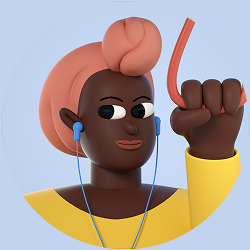
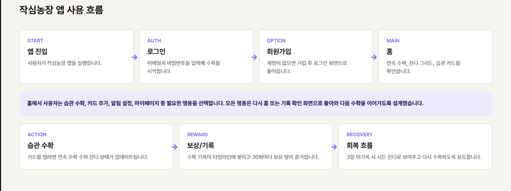
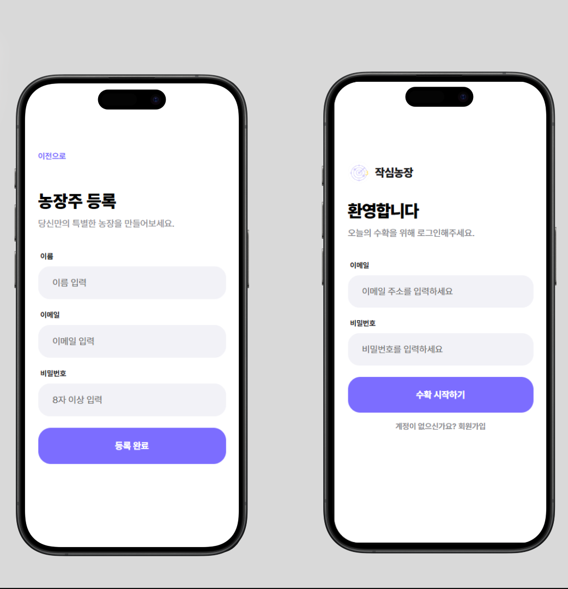
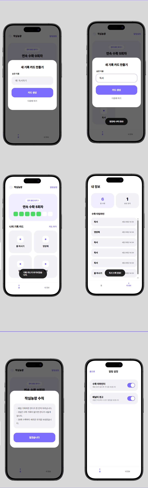

Goal: 오늘 하루의 성공을 시각적으로 확인하며 자신감을 회복하고 싶음
Pain Point: 기록을 한 번이라도 놓치면 느껴지는 무력감 때문에 앱을 아예 삭제해버림
사용자가 느끼는 심리적 부채감을 최소화하기 위해 서비스 구조를 수평적으로 단순화했습니다.

좌우로 스크롤하여 상세 플로우를 확인하세요.
빠른 진입을 통해 초기 이탈을 방지하는 로그인 화면

메인 농장 상태 및 기록 관리 기능

핵심 컨셉 홍보 영상
전체 서비스 흐름 시연